树
概念
树：由 个结点的有限集。当时，称为空树。
在任意一棵非空树中应满足：
- 有且仅有一个特定的称为根的结点。
- 当 时，其余结点可分为 个互不相交的有限集合 其中每个集合本身又是一棵树，并且称为根的子树。
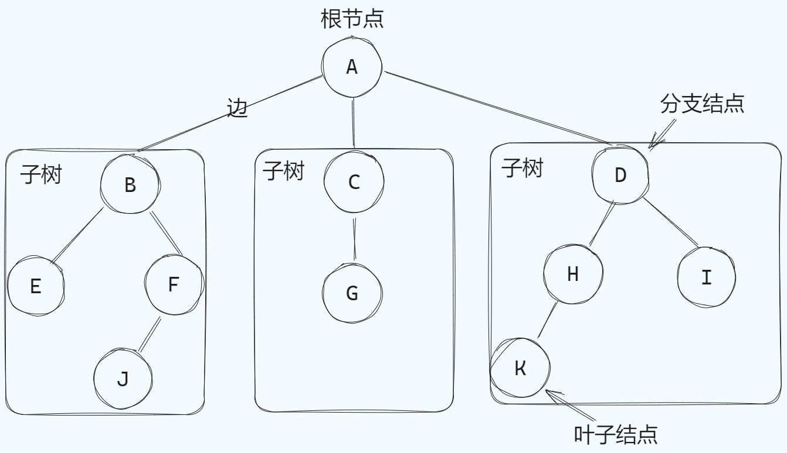
非空树的特性：
- 有且仅有一个根节点。
- 树的根结点没有前驱，除根结点外的所有结点有且只有一个前驱。
- 树中所有结点都可以有零个或多个后继。
- 没有后继的结点称为叶子结点（或终端结点）。
- 有后继的结点称为分支结点（或非终端结点）。
树的定义是递归的，即在树的定义中又用到了其自身，树是一种递归的数据结构。树作为一种逻辑结构，同时也是一种分层结构，因此树适合于表示具有层次结构的数据。
树中的某个结点（除根结点外）最多只和上一层的一个结点有直接关系，根结点没有直接上层结点，因此在个结点的树中有条边。 而树中每个结点与其下一层的零个或多个结点都有直接关系。
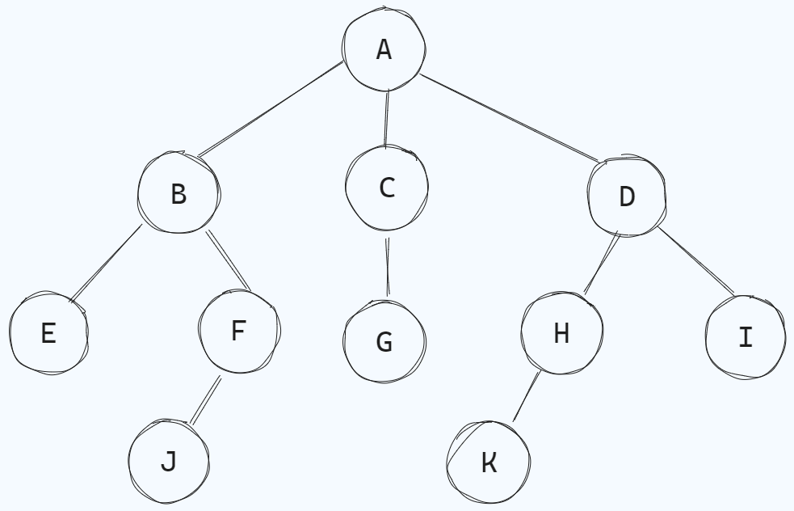
- 祖先结点：根结点 A 到结点 K 的唯一路径上的任意结点，称为结点 K 的祖先。如：K 结点的祖先结点是 H、D、A。
- 子孙结点：一个结点下面所有的结点都为子孙结点。如：B 结点的子孙结点是 E、F、J。
- 双亲结点（父节点）：一个结点的直接前驱结点。如：B 结点的双亲结点是 A。
- 孩子节点：一个结点的直接后继结点。如：B 结点的孩子结点是 E、F。
- 兄弟节点：一个结点的前驱的其他后继结点。如：E 结点的兄弟结点是 F。
- 堂兄弟节点：除兄弟节点外的同一层结点。如：E 结点的兄弟结点是 G、H、I。
- 路径：树中两个结点之间的路径是由这两个结点之间所经过的结点序列构成的，由于树中的分支是有向的，即从双亲指向孩子，所以树中的路径是从上向下的， 同一双亲的两个孩子之间不存在路径。
- 路径长度：路径长度是路径上所经过的边的个数。
- 结点的层次（深度）：从树根开始定义，从上往下数，默认根结点为第 1 层，它的子结点为第 2 层，以此类推。
- 结点的高度：从叶结点开始自底向上逐层累加的。
- 树的高度（深度）：总共多少层。
- 结点的度：树中一个结点的孩子个数。
- 树的度：各结点的度的最大值。
- m 叉树：每个结点最多只能有 m 个孩子。
- 有序树：从逻辑上看，树中结点的各子树从左到右是有次序的，不能互换。
- 无序树：从逻辑上看，树中结点的各子树从左到右是无次序的，可以互换。、
- 森林：森林是棵互不相交的树的集合。森林的概念与树的概念十分相近，因为只要把树的根结点删去就成了森林。反之，只要给棵独立的树加上一个结点，并把这棵树作为该结点的子树，则森林就变成了树。

性质
-
结点数 = 总度数 + 1
-
度为 的树、 叉树的区别
度为 的树 叉树 任意结点的度小于等于 （最多 个孩子） 任意结点的度小于等于 （最多 个孩子） 至少有一个结点的度等于 （有 个孩子） 允许所有结点的度都小于 一定是非空树，至少有 个结点 可以是空树 -
度为 的树中第 层至多有 个结点。（）
叉树第 层至多有 个结点。（）
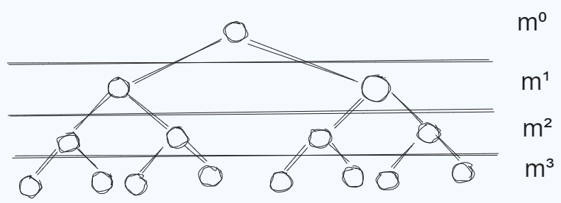
-
高度为 的 叉树至多有 个结点。
如上图，由等比数列求和公式 可得
-
高度为 h 的 m 叉树至少有 h 个结点；
高度为 h 、度为 m 的树至少有 h+m-1 个结点。
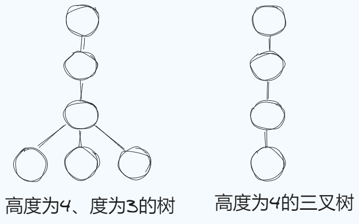
-
具有 个结点的 叉树的最小高度为 （向上取整）。
高度最小的情况即所有结点都有 个孩子
已知一棵有 2011 个结点的树，其叶结点个数为 116，该树对应的二叉树中无右孩子的结点个数是 1896。
树转换为二叉树时，树的每个分支结点的所有子结点中的最 右子结点无右孩子，根结点转换后也没有右孩子，因此，对应二叉树中无右孩子的结点个数 = 分支结点数 + 1 = 2011 - 116 + 1 = 1896。
设树是如下图所示的结构，则对应的二叉树中仅有前 115 个叶结点有右孩子，故无右孩子的结点个数 = 2011-115 = 1896。
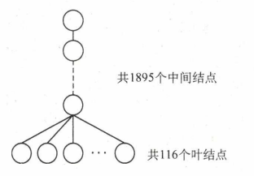
存储结构
树的存储方式有多种，既可采用顺序存储结构，又可采用链式存储结构，但无论采用何种存 储方式，都要求能唯一地反映树中各结点之间的逻辑关系。
双亲表示法
这种存储结构采用一组连续空间来存储每个结点，同时在每个结点中增设一个伪指针，指示其双亲结点在数组中的位置。
根结点下标为 0，其伪指针域为-1。
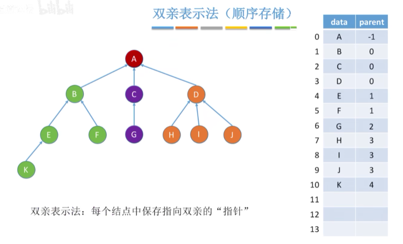
#define MAX_TREE_SIZE 100
typedef struct{
int data; // 数据
int parent; // 双亲位置域
}PTNode;
typedef struct{
PTNode nodes[MAX_TREE_SIZE];
int n; // 结点数
}PTree;相关操作：
-
插入结点
直接在数组后面新增数据元素，无需按逻辑上的次序存储。
-
删除结点
-
将需要删除的节点的指针域设为 -1，表示没有双亲。
缺点：数组之间的空数据导致遍历数组的速度变慢。
-
把后面的结点都前进一位，保证前面的存储单元都是有效的。
-
该存储结构利用了每个结点（根结点除外）只有唯一双亲的性质，可以很快地得到每个结点的双亲结点，但求结点的孩子时则需要遍历整个结构。
Tip
区别树的顺序存储结构与二叉树的顺序存储结构。
- 在树的顺序存储结构中，数组下标代表结点的编号，下标中所存的内容指示了结点之间的关系。
- 在二叉树的顺序存储结构中，数组下标既代表了结点的编号，又指示了二叉树中各结点之间的关系。
二叉树属于树，因此二叉树都可以用树的存储结构来存储，但树却不都能用二叉树的存储结构来存储。
孩子表示法
孩子表示法是将每个结点的孩子结点都用单链表链接起来形成一个线性结构。
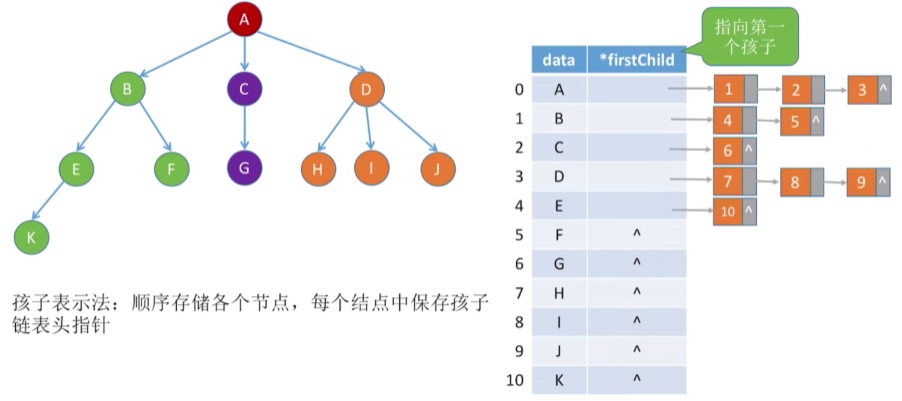
struct CTNode{
int child; // 孩子节点在数组中的位置
struct CTNode *next; // 下一个孩子
}
typedef struct{
int data;
struct CTNode *firstChild;// 第一个孩子
}CTBox;
typedef struct{
CTBox nodes[MAX_TREE_SIZE];
int n ,r;// 结点数和根的位置
}CTree;这种存储结构寻找子女的操作非常直接，而寻找双亲的操作需要遍历 n 个结点中孩子链表指 针域所指向的 n 个孩子链表。
孩子兄弟表示法
孩子兄弟表示法又称二叉树表示法，即以二叉链表作为树的存储结构。
孩子兄弟表示法使每个结点包括三部分内容：结点值、指向结点第一个孩子结点的指针，以及指向结点下一个兄弟结点的指针（沿此域可以找到结点的所有兄弟结点）。
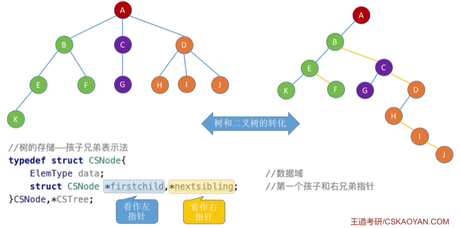
这种存储表示法比较灵活，其最大的优点是可以方便地实现树转换为二叉树的操作，易于查 找结点的孩子等，但缺点是从当前结点查找其双亲结点比较麻烦。
二叉树
概念
与树相似，二叉树也以递归的形式定义。
二叉树是一种特殊的树形结构，其特点是每个结点至多只有两棵子树（即二叉树中不存在度大于 2 的结点），并且二叉树的子树有左右之分，其次序不能任意颠倒。
二叉树是 个结点的有限集合：
- 或者为空二叉树，即 。
- 或者由一个根结点和两个互不相交的被称为根的左子树和右子树组成。左子树和右子树 又分别是一棵二叉树。

二叉树是有序树，左右子树不能颠倒，若将其左、右子树颠倒，则成为另一棵不同的二叉树。即使树中结点只有一棵子树，也要区分它是左子树还是右子树。
二叉树与度为 2 的有序树的区别：
- 度为 2 的树至少有 3 个结点，而二叉树可以为空。
- 度为 2 的有序树的孩子的左右次序是相对于另一孩子而言的，若某个结点只有一个孩子, 则这个孩子就无须区分其左右次序，而二叉树无论其孩子数是否为 2，均需确定其左右次序，即二叉树的结点次序不是相对于另一结点而言的，而是确定的。
二叉树的 5 种基本形态：
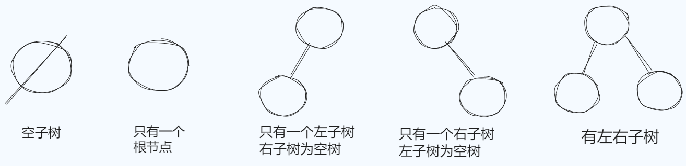
性质
-
非空二叉树上中度为 0、1、2 的结点个数分别为，则 。（叶子结点比二分支结点多一个）
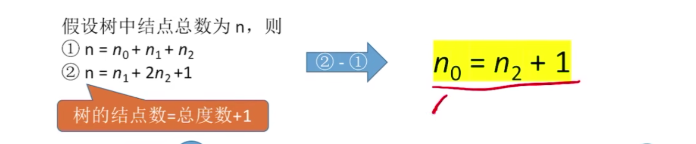
-
二叉树第 层最多由 个结点（）；m 叉树第 层最多由 个结点（）
-
高度为 的 2 叉树至多有 个结点。（刚好是满二叉树）；高度为 的 叉树至多有 个结点。
-
具有 个结点的完全二叉树的高度 为 或 。
-
当该完全二叉树是满二叉树时：
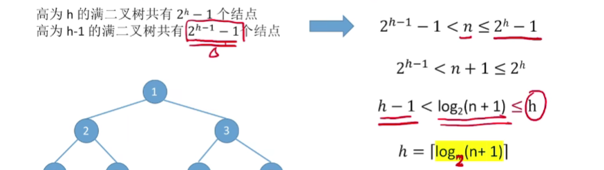
-
当该完全二叉树不是满二叉树时：
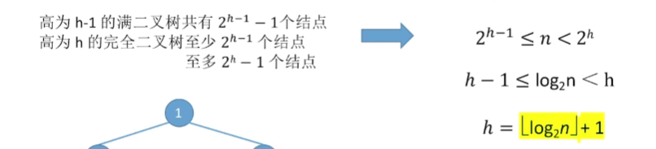
-
-
对于完全二叉树，可以由结点数 推出度为 0、1、2 的结点的个数为。
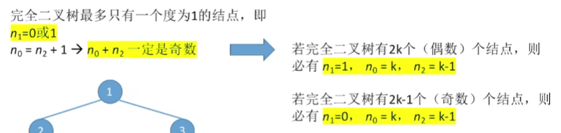
是奇数，，因此 只能是奇数 1。
存储结构
顺序存储结构
二叉树的顺序存储是指用一组地址连续的存储单元依次自上而下、自左至右存储完全二叉树上的结点元素。
完全二叉树和满二叉树采用顺序存储比较合适，树中结点的序号可以唯一地反映结点之间的逻辑关系，这样既能最大可能地节省存储空间，又能利用数组元素的下标值确定结点在二叉树中的位置，以及结点之间的关系。
但对于一般二叉树树而言，采用顺序存储会浪费极大空间。
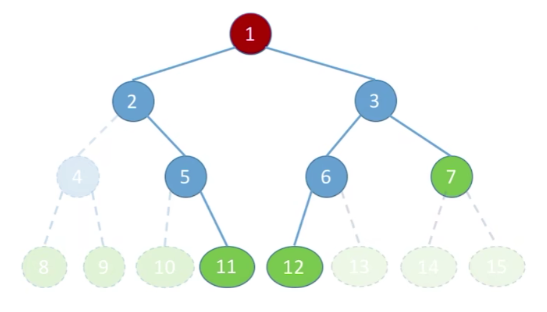
#define MaxSize 100
struct TreeNode {
int val;// 结点中的数据元素
bool isEmpty;// 结点是否为空
};链式存储结构
由于顺序存储的空间利用率较低，因此二叉树一般都采用链式存储结构，用链表结点来存储二叉树中的每个结点。
二叉链表至少包含 3 个域：数据域 data、左指针域 lchild、右指针域 rchild。实际上在不同的应用中，还可以增加某些指针域，如增加指向父结点的指针后，变为三叉链表的存储结构。
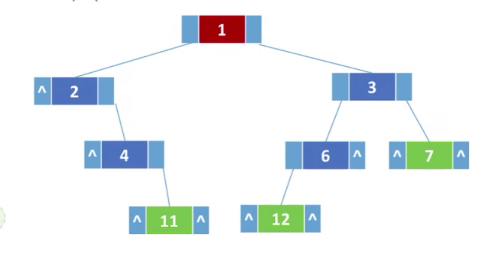
typedef struct BiTNode {
int val;
struct BiTNode *lChild, *rChild;
} BiTNode, *BiTree;遍历
先中后序遍历
二叉树的遍历是指按某条搜索路径访问树中每个结点，使得每个结点均被访问一次，而且仅被访问一次。
按照先遍历左子树再遍历右子树的原则，常见的遍历次序有先序（NLR）、中序（LNR）和后序（LRN）三种遍历算法，其中“序”指的是根结点 在何时被访问。
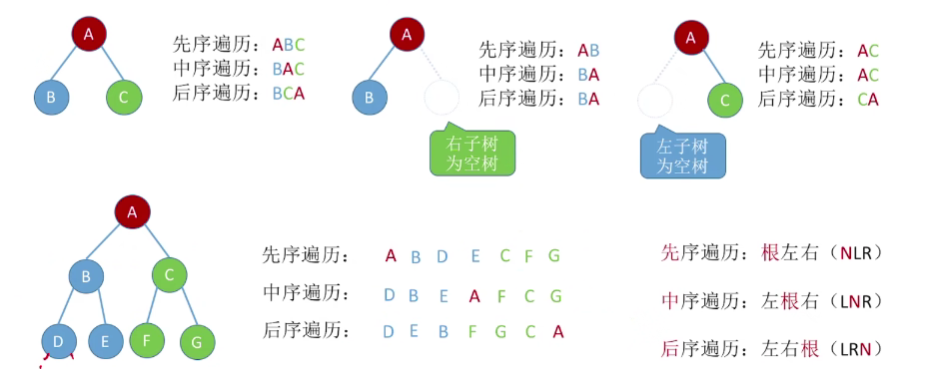
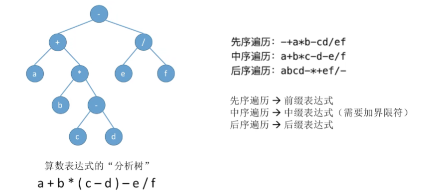
// 先序遍历
void PreOrder(BiTree T) {
if (T != nullptr) {
visit(T);// 访问根节点
PreOrder(T->lChild);// 递归遍历左子树
PreOrder(T->rChild);// 递归遍历右子树
}
}// 中序遍历
void PreOrder(BiTree T) {
if (T != nullptr) {
PreOrder(T->lChild);// 递归遍历左子树
visit(T);// 访问根节点
PreOrder(T->rChild);// 递归遍历右子树
}
}// 后序遍历
void PreOrder(BiTree T) {
if (T != nullptr) {
PreOrder(T->lChild);// 递归遍历左子树
PreOrder(T->rChild);// 递归遍历右子树
visit(T);// 访问根节点
}
}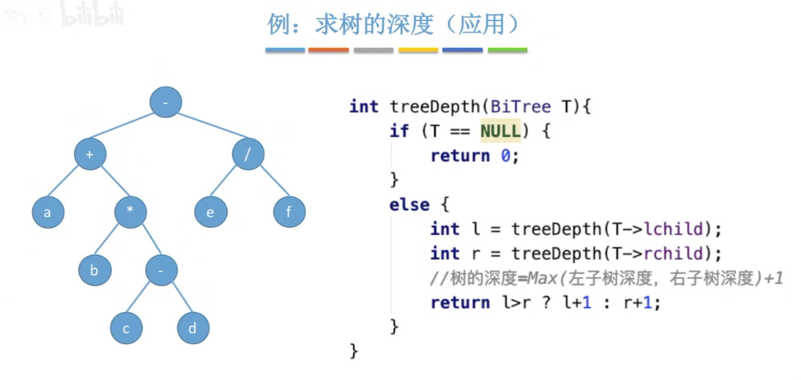
层序遍历
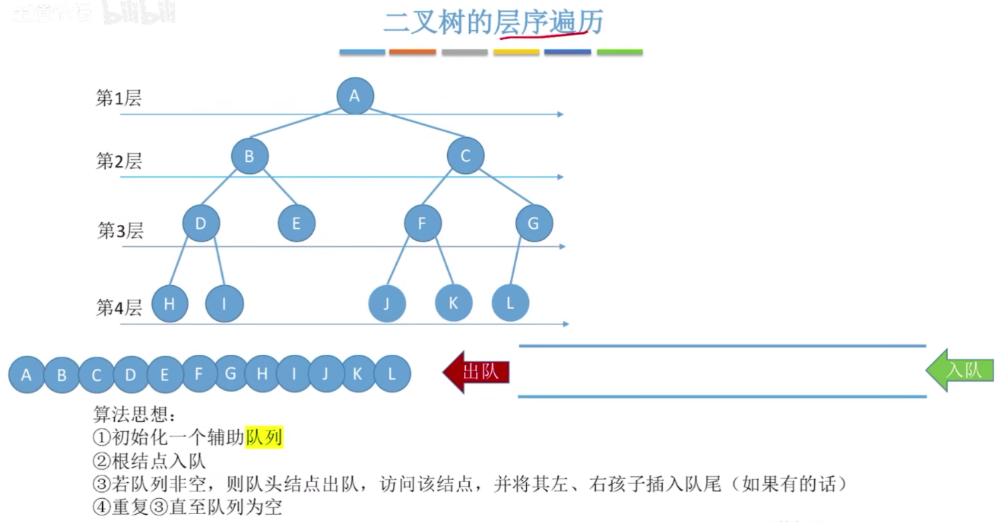
typedef struct BiTNode {
int val;
struct BiTNode *lChild, *rChild;
} BiTNode, *BiTree;
typedef struct LinkNode {
BiTNode data;
struct LinkNode *next;
} LinkNode;
typedef struct {
LinkNode *front, *rear;
} LinkQueue;
void LevelOrder(BiTree T) {
LinkQueue Q;
InitQueue(Q);// 初始化队列
BiTree p;
EnQueue(Q, T);// 根节点入队
while (!isEmpty(Q)){
DeQueue(Q,p);// 对头结点出队
if (p->lChild != nullptr){
EnQueue(Q, p->lChild);// 左孩子入队
}
if (p->rChild != nullptr){
EnQueue(Q, p->rChild);// 有孩子入队
}
}
}由遍历序列构造二叉树
若只给出一颗二叉树的 前/中/后/层 序遍历序列中的一种，不能唯一确定一颗二叉树。
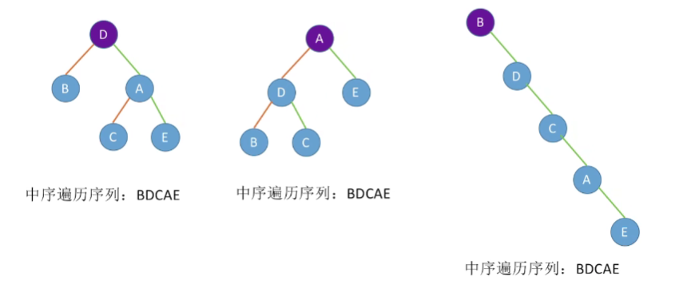
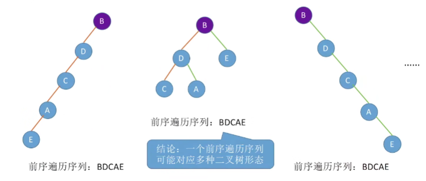
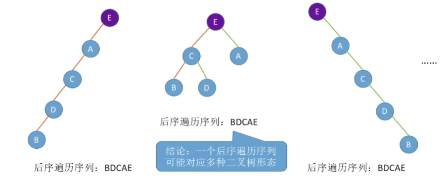
唯一地确定一棵二叉树：
- 先序序列+中序序列
- 后序序列+中序序列
- 层序序列+中序序列
Tip
- 由遍历序列构造二叉树的核心就是：找到根节点，根据根节点在中序序列划分左右子树，找到左右子树的根节点，继续划分左右子树。
- 必须要有中序遍历序列。
Q&A
Tip
先序序列为 a,b,c,d,…… 的不同二叉树的个数是多少？
前序序列中序序列和相当于以前序序列为入栈次序，以中序序列为出栈次序。又因为前序序列+中序序列唯一地确定一棵二叉树，所以该问题等价于以 a,b,c,d,…… 为入栈次序，出栈序列的个数是多少？
个不同元素进栈，出栈元素不同排列的个数为。
特殊二叉树
满二叉树
一棵高度为 ，且含有 个结点的二叉树称为满二叉树，即树中的每层都含有最多的结点。
对满二叉树按层序编号：约定编号从根结点（根结点编号为 1）起，自上而下，自左向右。
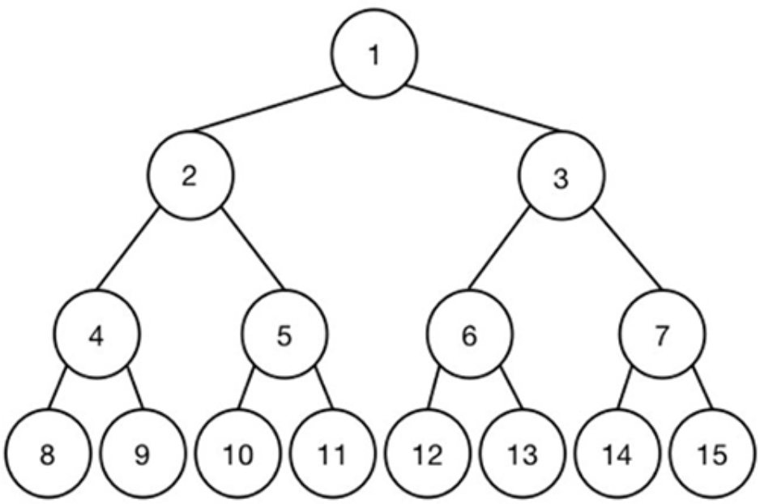 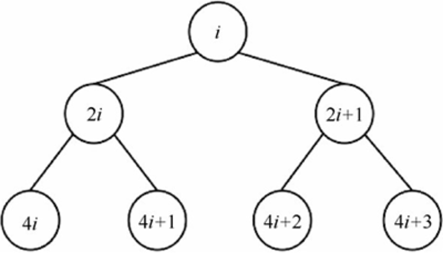特点：
- 只有最后一层有叶子结点
- 不存在度为 1 的结点
- 对于编号为 的结点，若有双亲，则其双亲为质 , 若有左孩子，则左孩子为 ，若有右孩子，则右孩子为 。
完全二叉树
高度为 、有 个结点的二叉树，当且仅当其每个结点都与高度为 的满二叉树中编号为 的结点一一对应时，称为完全二叉树。
满二叉树是是一种特殊的完全二叉树，但完全二叉树不一定是满二叉树
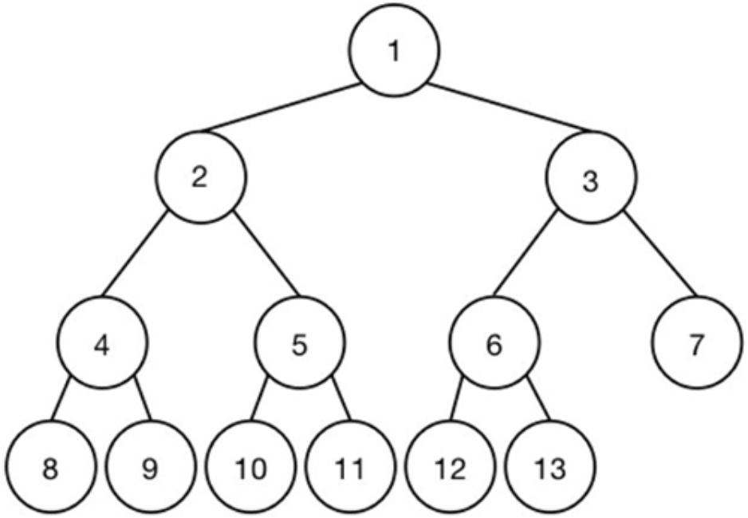特点：
- 只有最后两层可能有叶子结点
- 最多只有一个度为 1 的结点，且该结点只有左孩子而无右孩子
- 为分支结点，为叶子结点
- 若 为奇数，则每个分支结点都有左孩子和右孩子；若 为偶数，则编号最大的分支结点（编号为 ）只有左孩子，没有右孩子，其余分支结点左、右孩子都有。
二叉排序树
左子树上所有结点的关键字均小于根结点的关键字；右子树上的所有结点的关键字均大于根结点的关键字；左子树和右子树又各是一棵二叉排序树。
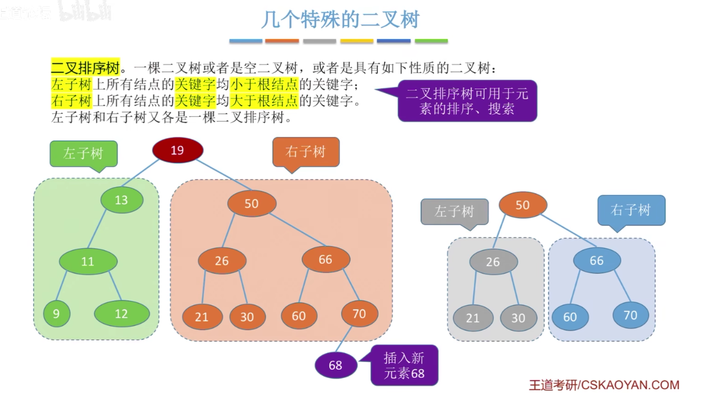
平衡二叉树
树上任意一个结点的左子树和右子树的深度之差不超过 1。
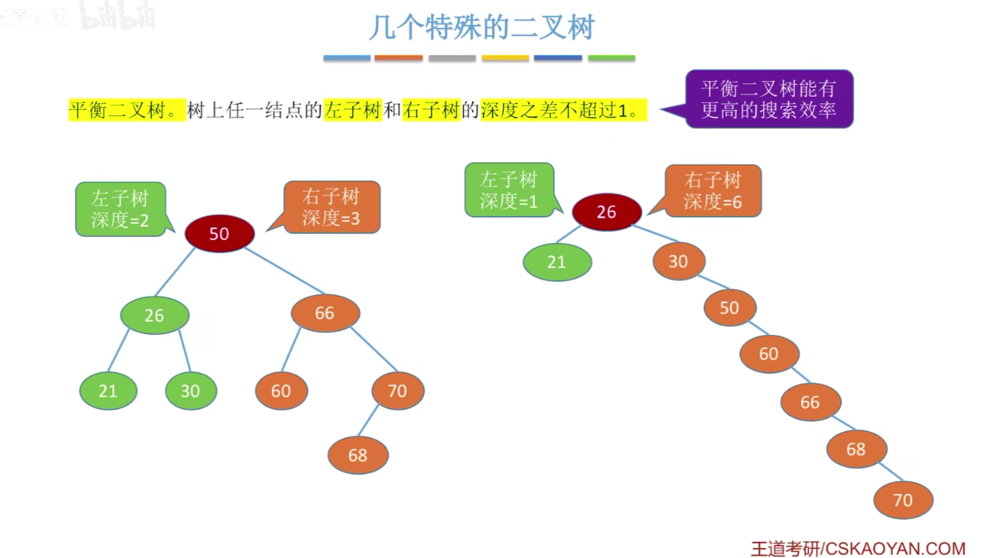
线索二叉树
传统的二叉链表存储仅能体现一种父子关系，不能直接得到结点在遍历中的前驱或后继
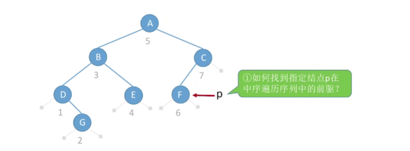
从根结点出发，进行中序遍历，定义指针 q 记录当前访问的结点，指针 pre 记录上一个访问的结点。
void vistit(BiTNode T){
pre = q;
q = T;
if(q == p){
// 此时 pre 指向的结点就是 p 的前驱
}
if(pre == p){
// 此时 pre 指向的结点就是 p 的后继
}
}缺点：找前驱、后继很不方便；必须从根开始进行一次遍历。
概念
为了加快查找结点前驱和后继的速度，因此引入线索二叉树这个概念。
在含 个结点的二叉树中，有 个空指针，线索二叉树就是利用这些空指针来存放指向其前驱或后继的指针。这样就可以像遍历单链表那样方便地遍历二叉树。
二叉树是一种逻辑结构，但线索二叉树是加上线索后的链表结构，即它是二叉树在计算机内部的一种存储结构，所以是一种物理结构。
Tip
含 个结点的二叉树中，有 个空指针。
每个叶结点都有 2 个空指针，每个度为 1 的结点都有 1 个空指针，空指针总数为 ，又 ，所以空指针总数为 。
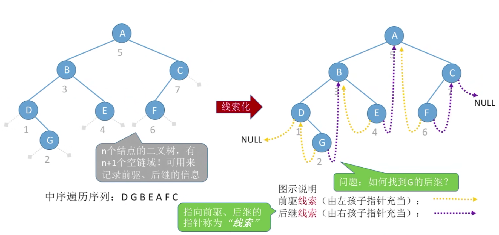
存储结构
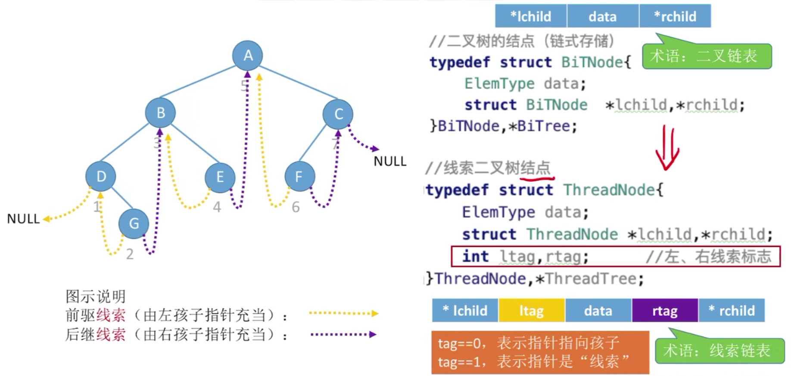
三种线索二叉树的对比
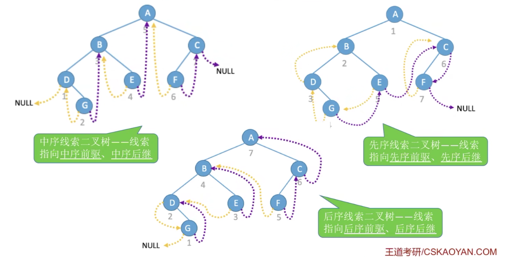
Note
后序线索树的遍历仍需要栈的支持。
后序线索树遍历时，最后访问根结点，若从右孩子 x 返回访问父结点，则由于结点 x 的右孩子不一定为空（右指针无法指向其后继），因此通过指针可能无法遍历整棵树。
如下图所示，结点中的数字表示遍历的顺序，图(C)中结点 6 的右指针指向其右孩子 5，而不指向其后序后继结点 7，因此后序遍历还需要栈的支持，而图(A)和图(B)均可遍历。
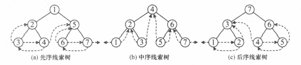
二叉树的线索化实现
中序线索化
typedef struct ThreadNode {
int val;
struct ThreadNode *lChild, *rChild;
int lTag, rTag;
} ThreadNode, *ThreadTree;
// 当前访问结点的前驱
ThreadNode *pre = nullptr;
void visit(ThreadNode *q) {
// 左子树为空，建立当前结点前驱线索
if (q->lChild == nullptr) {
q->lChild = pre;
q->lTag = 1;
}
// 建立前驱结点的后继结点
if (pre != nullptr && pre->rChild == nullptr) {
pre->rChild = q;
pre->rTag = 1;
}
pre = q;
}
// 中序遍历
void InThread(ThreadTree T) {
if (T != nullptr) {
InThread(T->lChild);
visit(T);
InThread(T->rChild);
}
}
// 中序线索化二叉树
void CreateThread(ThreadTree T) {
pre = nullptr;
if (T != nullptr) {
InThread(T);
// 处理遍历后的最后一个结点
if (pre->rChild == nullptr) {
pre->rTag = 1;
}
}
}先序线索化
// 其他代码一样
// 先序遍历
void PreThread(ThreadTree T) {
if (T != nullptr) {
visit(T);
if (T -> lTag == 0){
InThread(T->lChild);// lTag不是前驱线索
}
InThread(T->rChild);
}
}
// 先序线索化二叉树
void CreateThread(ThreadTree T) {
pre = nullptr;
if (T != nullptr) {
PreThread(T);
// 处理遍历后的最后一个结点
if (pre->rChild == nullptr) {
pre->rTag = 1;
}
}
}在线索二叉树中找前驱和后继
-
中序线索二叉树找中序后继
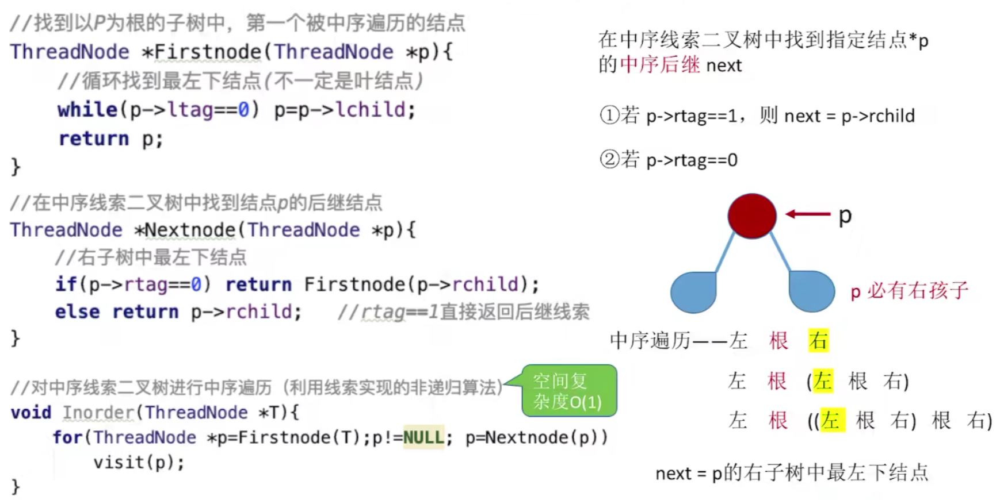
-
中序线索二叉树找中序前驱
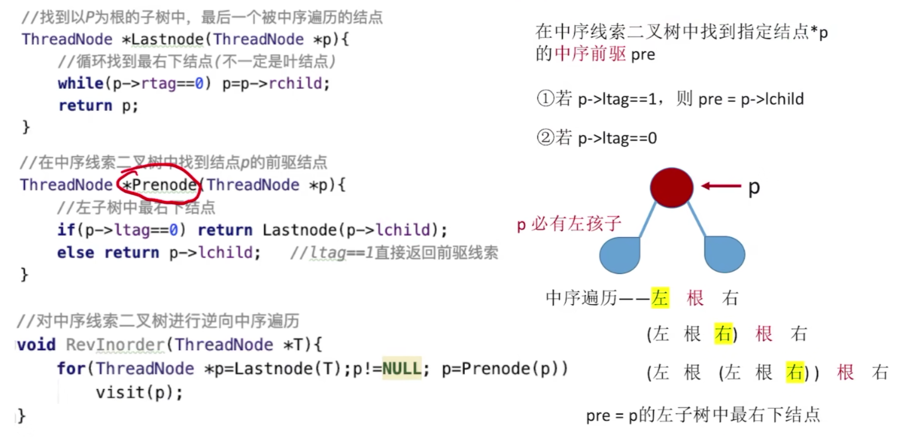
-
先序线索二叉树找先序后继
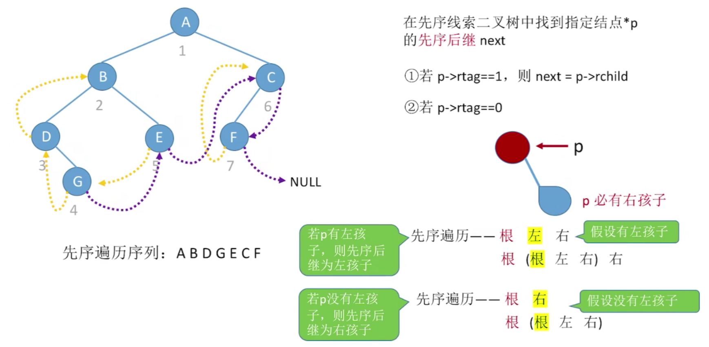
-
先序线索二叉树找先序前驱
由于每个结点只有指向左右孩子的指针，因此无法找到前驱。
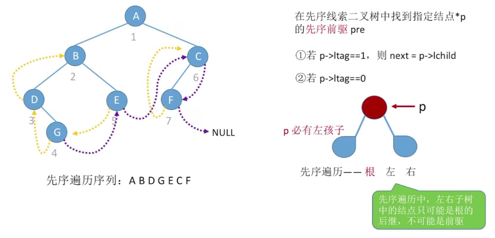
要找到前驱可以使用三叉链表，即在结点中添加一个指向父节点的指针
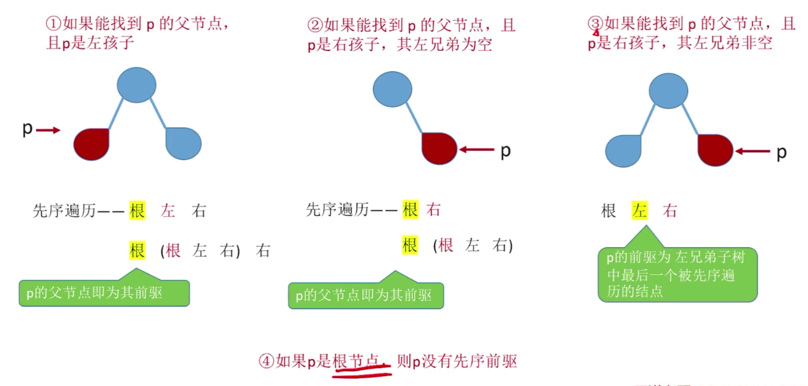
-
后序线索二叉树找后序前驱
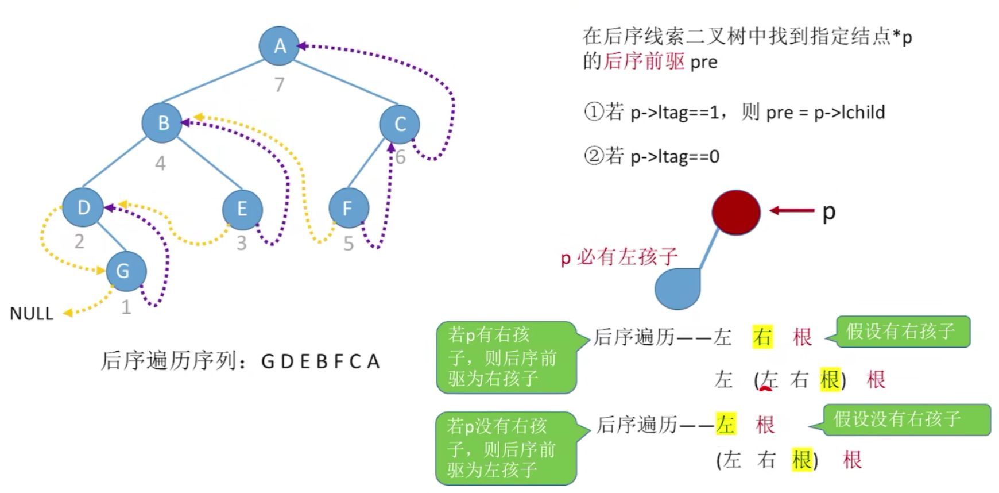
-
后序线索二叉树找后序后继
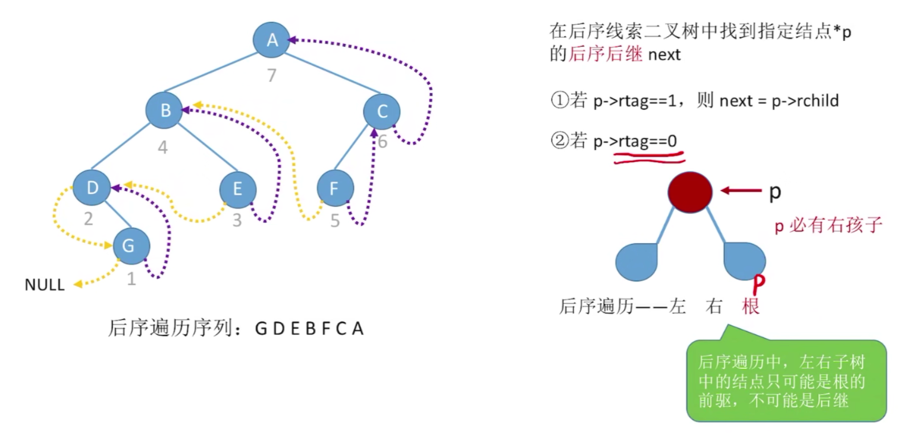
仍然是使用三叉链表
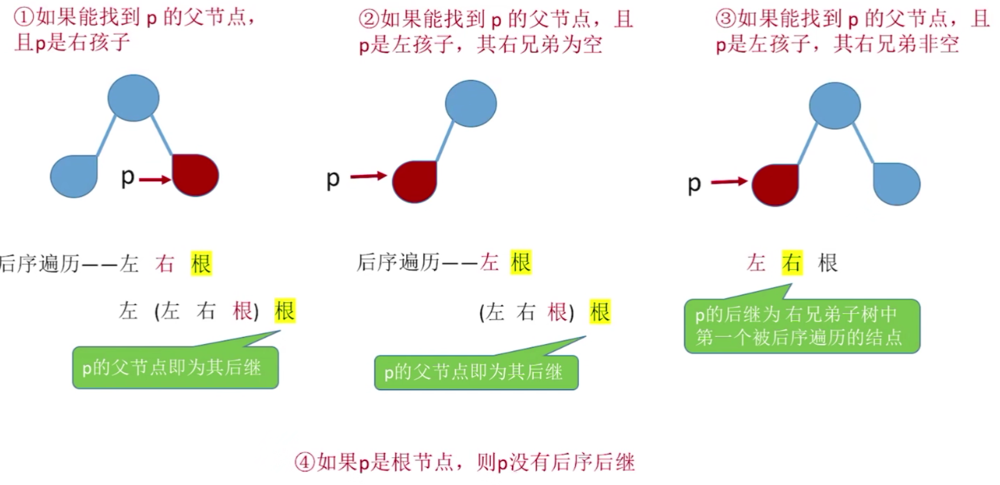
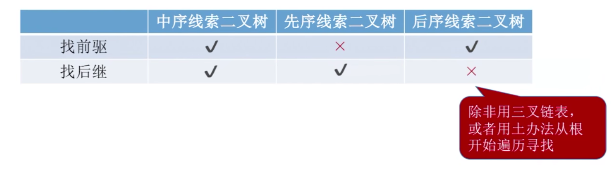
树、森林与二叉树的转换
树 → 二叉树
-
规则：
每个结点左指针指向它的第一个孩子，右指针指向它在树中的相邻右兄弟，这个规则又称“左孩子右兄弟”。由于根结点没有兄弟，所以对应的二叉树没有右子树。
-
画法：
- 在兄弟结点之间加一连线；
- 对每个结点，只保留它与第一个孩子的连线，而与其他孩子的连线全部抹掉；
- 以树根为轴心，顺时针旋转 45。
若 是由有序树 转换而来的二叉树，则 中结点的后根序列就是 中结点的中序序列。
森林 → 二叉树
-
规则：
先将森林中的每棵树转换为二叉树，由于任意一棵和树对应的二叉树的右子树必空，若把森林中第二棵树根视为第一棵树根的右兄弟，即将第二棵树 对应的二叉树当作第-棵二叉树根的右子树，将第三棵树对应的二叉树当作第二棵二叉树根的右 子树……以此类推，就可以将森林转换为二叉树。
-
画法：
- 将森林中的每棵树转换成相应的二叉树；
- 每棵树的根也可视为兄弟关系，在每棵树的根之间加一根连线；
- 以第一棵树的根为轴心顺时针旋转 45。
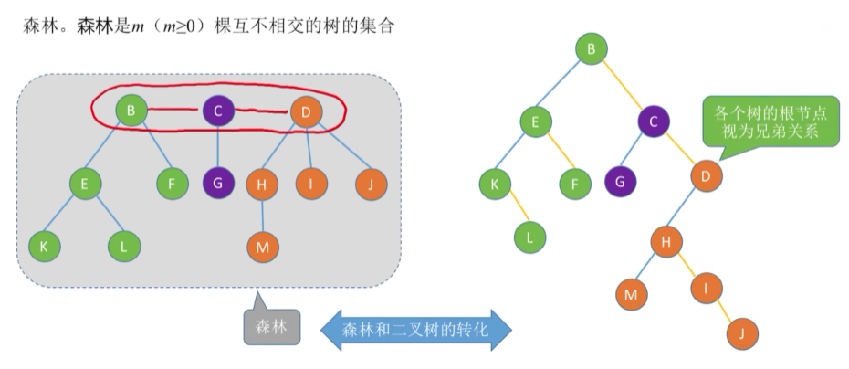
二叉树 → 森林
-
规则：
若二叉树非空，则二叉树的根及其左子树为第一棵树的二叉树形式，故将根的右链断开。二叉树根的右子树又可视为一个由除第一棵树外的森林转换后的二叉树，应用同样的方法，直到最后只剩一棵没有右子树的二叉树为止，最后再将每棵二叉树依次转换成 树，就得到了森林。二叉树转换为树或森林是唯一的。
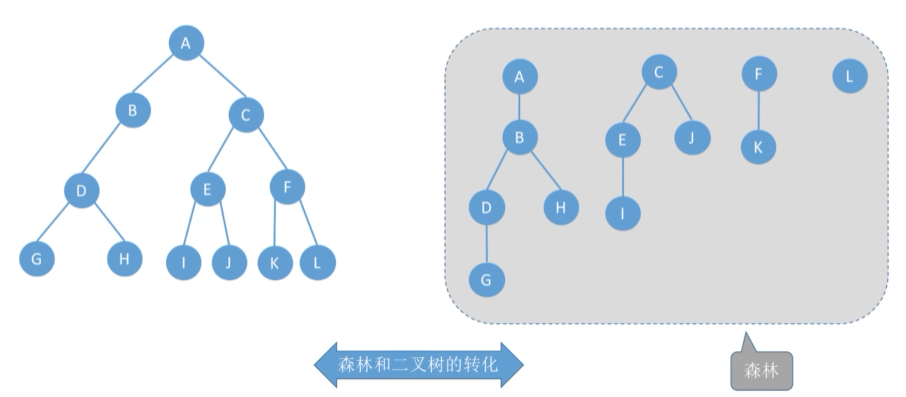
树和森林的遍历
树的遍历
-
先根遍历
若树非空，先访问根结点，再依次遍历根结点的每棵子树，遍历子树时仍遵循先根后子树的规则。其遍历序列与这棵树相应二叉树的先序序列相同。
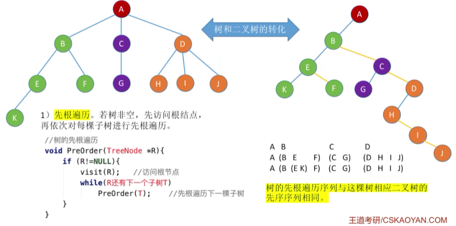
-
后根遍历
若树非空，先依次遍历根结点的每棵子树，再访问根结点，遍历子树时仍遵循先子树后根的规则。其遍历序列与这棵树相应二叉树的中序序列相同。
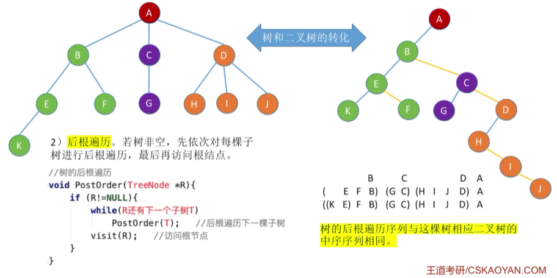
-
层次遍历
与二叉树的层次遍历思想基本相同，即按层序依次访问各结点。
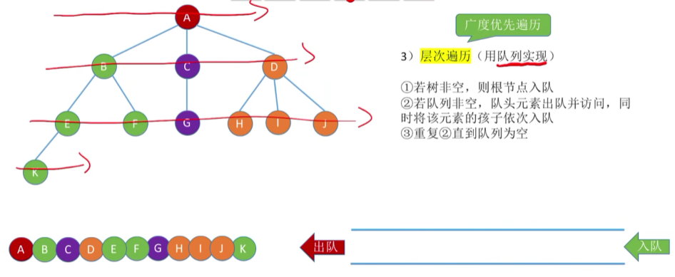
森林的遍历
-
先序遍历森林
若森林为非空，则按如下规则进行遍历：
- 访问森林中第一棵树的根结点。
- 先序遍历第一棵树中根结点的子树森林。
- 先序遍历除去第一棵树之后剩余的树构成的森林。
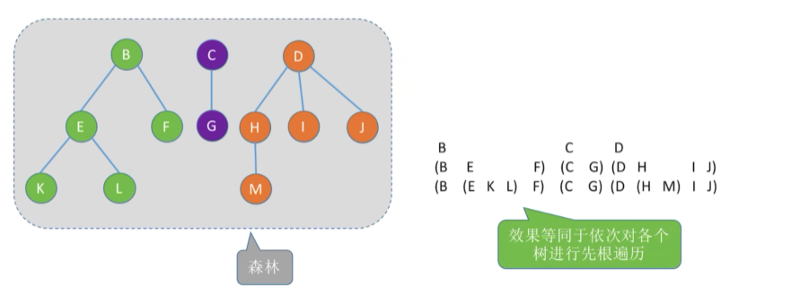
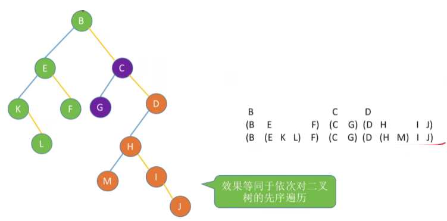
-
中序遍历森林
森林为非空时，按如下规则进行遍历：
- 中序遍历森林中第一棵树的根结点的子树森林。
- 访问第一棵树的根结点。
- 中序遍历除去第一棵树之后剩余的树构成的森林。
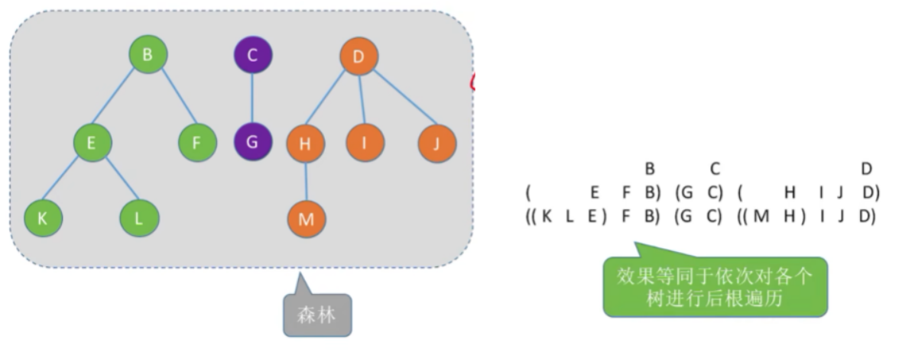
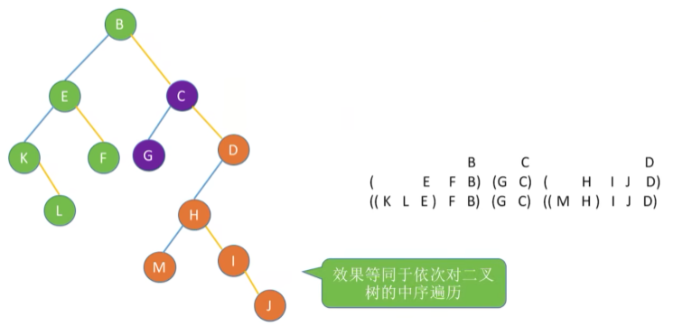
Tip
部分教材也将森林的中序遍历称为后序遍历，称中序遍历是相对其二叉树而言的，称后序遍历是因为根确实是最后才访问的，如遇到这两种称谓，那么都可以理解为同一种遍历方法。
哈夫曼树
Note
结点的权：有某种现实含义的数值。
结点的带权路径长度：从树的根到任意结点的路径长度（经过的边数）与该结点上权值的乘积。
树的带权路径长：树中所有叶结点的带权路径长度之和，记为
定义
在含有 n 个带权叶结点的二叉树中，其中带权路径长度(WPL)最小的二叉树称为哈夫曼树，也称最优二叉树。
构造
给定 n 个权值分别为的结点，构造哈夫曼树的算法描述如下：
- 将这 n 个结点分别作为 n 棵仅含一个结点的二叉树，构成森林 F。
- 构造一个新结点，从 F 中选取两棵根结点权值最小的树作为新结点的左、右子树，并且将新结点的权值置为左、右子树上根结点的权值之和。
- 从 F 中删除刚才选出的两棵树，同时将新得到的树加入 F 中。
- 重复步骤 2. 和 3. ，直至 F 中只剩下一棵树为止。
除上图的构造的哈夫曼树外，还可以如下图构造哈夫曼树
给定整数集合 {3,5,6,9,12}，与之对应的哈夫曼树是(C)。
特点
- 每个初始结点最终都成为叶结点，且权值越小的结点到根结点的路径长度越大。
- 构造过程中共新建了 n-1 个结点（双分支结点），因此哈夫曼树的结点总数为 2n-1。
- 每次构造都选择 2 棵树作为新结点的孩子，因此哈夫曼树中不存在度为 1 的结点。
- 哈夫曼树并不唯一，但 WPL 必然相同且为最优。
一棵哈夫曼树共有 215 个结点，对其进行哈夫曼编码，共能得到 108 个不同的码字。
- 在哈夫曼树中，叶节点数 - 叶节点数 = 1，因此叶结点数为(215 + 1)/2=108，所以共有 108 个不同的码字。
- 在哈夫曼树中只有度为 0 和 2 的结点，结点总数，且，由题知 。
哈夫曼编码
Note
- 固定长度编码：在数据通信中，若对每个字符用相等长度的二进制位表示。
- 可变长度编码：在数据通信中，允许对不同字符用不等长的二进制位表示。
可变长度编码比固定长度编码要好得多，其特点是对频率高的字符赋以短编码，而对频率较低的字符则赋以较长一些的编码，从而可以使字符的平均编码长度减短，起到压缩数据的效果。
Note
前缀编码：没有一个编码是另一个编码的前缀。
哈夫曼编码是一种被广泛应用而且非常有效的数据压缩编码。
由哈夫曼树得到哈夫曼编码：
-
将字符集中出现的每一个字符当作一个叶子结点，其权值为它出现的频度（或次数），构造出对应的哈夫曼树。
-
将字符的编码解释为从根至该字符的路径上边标记的序列。
Note
左分支和右分支究竞是表示 0 还是表示 1 没有明确规定，因此构造出的哈夫曼树并不唯一，但各哈夫曼树的带权路径长度 WPL 相同且为最优。此外，如有若干权值相同的结点，则构造出的哈夫曼树更可能不同，但 WPL 必然相同且为最优。
Important
哈夫曼编码的加权平均长度 = WPL / 叶子结点权值之和
并查集
Note
定义
并查集是一种简单的集合表示。
通常用树（森林）的双亲表示作为并查集的存储结构，每个子集合以一棵树表示。
所有表示子集合的树，构成表示全集合的森林，存放在双亲表示数组内。通常用数组元素的下标代表元素名，用根结点的下标代表子集合名，根结点的双亲结点为负数。
实现
-
Initial(S)将集合 S 中的每个元素都初始化为只有一个单元素的子集合。
-
Union(S, Rootl, Root2)（并）把集合 S 中的子集合 Root2 并入子集合 Root1。要求 Root1 和 Root2 互不相交，否则不执行合并。
-
Find(S, x)（查）查找集合 S 中单元素 x 所在的子集合，并返回该子集合的根结点。
#define SIZE 13
int UFSets[SIZE];// 集合元素数组
// 初始化并查集
void Initial(int S[]) {
for (int i = 0; i < SIZE; i++) {
S[i] = -1;
}
}
int Find(int S[], int x) {
while (S[x] >= 0) {
x = S[x];
}
return x;
}
void Union(int S[], int Root1, int Root2) {
if (Root1 == Root2)return;
S[Root2] = Root1;
}时间复杂度
-
Find()查操作的最坏时间复杂度为 。 -
Union()并操作的时间复杂度为 。
优化
核心：降低树的高度
-
Union操作优化目的：降低
Find()的时间复杂度。- 用根节点的绝对值表示树的结点总数
Union操作，让小树合并到大树
使用该方法构造的树高不超过
优化后，
Find操作最坏时间复杂度度为 ，Union最坏时间复杂度为 -
Find操作优化（压缩路径）先找到根节点，再将查找路径上的所有结点都挂到根结点下。
每次
Find操作，先找根，在压缩路径，可使树的高度不超过 。 是一个增长很缓慢的函数，对于常见的 n 值，通常 ，因此优化后的并查集的Find、Union操作时间开销都很低。Find最坏时间复杂度为 ，Union最坏时间复杂度为